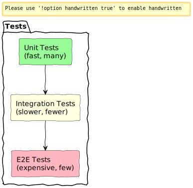
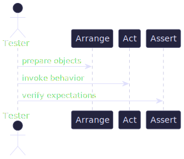
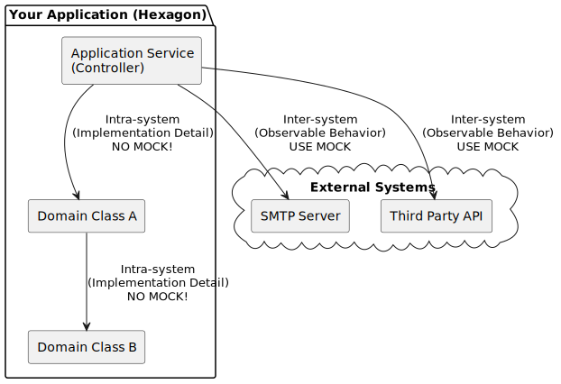

Chào mừng đến với Wiki Unit Test
Đây là trang tài liệu tổng hợp các kiến thức, nguyên tắc và bài học thực tế về Unit Testing trong phát triển phần mềm. Mục tiêu của trang wiki này là biến những kiến thức phức tạp thành một nguồn tài liệu dễ học, dễ tra cứu cho các lập trình viên.
Tóm tắt cốt lõi
- Unit testing là một mạng lưới an toàn (safety net) giúp phát hiện lỗi hồi quy (regressions) và duy trì tốc độ phát triển của dự án về lâu dài.
- Nếu code của bạn khó để viết unit test, đó thường là một dấu hiệu của thiết kế kém (ví dụ: tight coupling - liên kết chặt chẽ). Ngược lại, code dễ test không đảm bảo rằng đó là code hoàn hảo.
- Mục tiêu chính khi viết test:
- Phát hiện lỗi hồi quy một cách hiệu quả.
- Giảm chi phí bảo trì bộ test.
- Cho phép tái cấu trúc (refactor) code một cách an toàn và tự tin.
- Không có test: Dự án có thể phát triển nhanh lúc đầu, nhưng sẽ chậm lại đáng kể về sau do sự entropy của mã nguồn (code ngày càng phức tạp, rối rắm và dễ hỏng).
- Có test: Việc sửa đổi và tái cấu trúc code trở nên an toàn hơn, giúp dự án duy trì được chất lượng và tốc độ.
Code không phải là một tài sản (asset), nó là một khoản nợ (liability). Code càng nhiều, rủi ro tiềm ẩn bug càng lớn. Unit test chính là "tấm khiên" bảo vệ bạn khỏi khoản nợ đó.
Hãy bắt đầu khám phá các chủ đề chi tiết hơn qua thanh điều hướng bên trái!
Bắt đầu với Unit Test
Phần này sẽ giới thiệu những khái niệm nền tảng nhất mà bạn cần nắm vững trước khi đi sâu vào các kỹ thuật chi tiết.
✅ Test Tốt vs. Test Tồi
Một bài test được coi là "tốt" khi nó mang lại giá trị cao với chi phí bảo trì thấp. Ngược lại, một bài test "tồi" sẽ trở thành gánh nặng cho dự án.
- Test Tốt:
- Chạy nhanh.
- Mục đích rõ ràng, dễ đọc.
- Độc lập, không phụ thuộc vào các test khác.
- Ít chi phí bảo trì khi code thay đổi (chống chịu được refactor).
- Tập trung vào các hành vi (behavior) quan trọng của hệ thống.
- Test Tồi:
- Chạy chậm.
- Dễ bị "vỡ" (fail) dù logic của ứng dụng vẫn đúng.
- Có nhiều code thừa (boilerplate).
- Gây ra các cảnh báo giả (false positive), làm mất niềm tin của lập trình viên.
- Bị trùng lặp (redundant) với các test khác.
Phân loại các cấp độ Test
Trong phát triển phần mềm, có nhiều cấp độ kiểm thử khác nhau, mỗi loại có một mục đích riêng. Ba loại phổ biến nhất thường được minh họa qua mô hình Kim tự tháp Kiểm thử.
- Unit Test (Kiểm thử đơn vị):
Mục tiêu: Kiểm tra một đơn vị (unit) code nhỏ và cô lập (ví dụ: một hàm, một class).
Đặc điểm: Chạy hoàn toàn trong bộ nhớ (in-memory), không phụ thuộc vào các hệ thống bên ngoài như database, file system hay network. Rất nhanh. - Integration Test (Kiểm thử tích hợp):
Mục tiêu: Kiểm tra sự tương tác và phối hợp giữa hai hay nhiều thành phần của hệ thống, hoặc giữa hệ thống của bạn và một hệ thống bên ngoài (database, API của bên thứ ba).
Đặc điểm: Chậm hơn Unit Test vì cần truy cập vào các tài nguyên ngoài process. - End-to-end (E2E) Test (Kiểm thử đầu-cuối):
Mục tiêu: Kiểm tra toàn bộ luồng hoạt động của ứng dụng từ góc nhìn của người dùng cuối.
Đặc điểm: Mô phỏng một người dùng thật, tương tác từ giao diện người dùng (UI) xuống tới database. Rất chậm và chi phí bảo trì cao.
Mô hình Kim tự tháp Kiểm thử (Test Pyramid)
Đây là một mô hình trực quan giúp định hướng chiến lược viết test: hãy viết thật nhiều Unit Test, ít hơn Integration Test và số lượng E2E Test là ít nhất.
Cấu trúc và Đánh giá Test
Sau khi nắm được các khái niệm cơ bản, bước tiếp theo là tìm hiểu cách cấu trúc một bài test cho dễ đọc và cách đánh giá bộ test của bạn một cách đúng đắn.
Mẫu AAA — Arrange / Act / Assert
Đây là một mẫu cấu trúc (pattern) cực kỳ phổ biến giúp cho các bài test trở nên rõ ràng và nhất quán. Một bài test nên được chia thành 3 phần riêng biệt:
- Arrange (Sắp đặt):
Mục đích: Chuẩn bị mọi thứ cần thiết để bài test có thể chạy.
Công việc: Khởi tạo đối tượng, chuẩn bị dữ liệu đầu vào, thiết lập các mock/stub. - Act (Hành động):
Mục đích: Thực thi hành vi (behavior) mà bạn muốn kiểm tra.
Công việc: Gọi phương thức hoặc hàm cần test. Thông thường, phần này chỉ nên có một dòng code duy nhất. - Assert (Xác minh):
Mục đích: Kiểm tra xem kết quả của hành động có đúng như mong đợi hay không.
Công việc: So sánh kết quả trả về hoặc trạng thái của đối tượng với một giá trị kỳ vọng.
💡 Xem thực hành: Để xem cách áp dụng mẫu AAA vào thực tế, hãy tham khảo các ví dụ trong phần Thực hành PyTest và Thực hành GTest.
Sơ đồ tuần tự của mẫu AAA
Sơ đồ này minh họa luồng hoạt động của một bài test theo mẫu AAA.
Các chỉ số Độ bao phủ (Coverage Metrics) — Hiểu cho đúng
Độ bao phủ (code coverage) là một chỉ số đo lường tỷ lệ code của bạn được thực thi bởi các bài test. Tuy nhiên, đây là một chỉ số rất dễ bị hiểu sai.
- Line coverage (Độ phủ dòng lệnh): Tỷ lệ phần trăm số dòng code đã được chạy qua bởi bộ test.
- Branch coverage (Độ phủ nhánh): Tỷ lệ phần trăm các nhánh quyết định (ví dụ:
if/else,switch/case) đã được thực thi. Đây là chỉ số quan trọng hơn line coverage.
Công thức tính Branch Coverage
Branch coverage = (Số nhánh đã được test chạy qua) / (Tổng số nhánh trong mã nguồn)
Coverage là một chỉ báo, không phải mục tiêu
Hãy nhớ rằng, coverage là một công cụ để tìm ra những phần code chưa được test, chứ không phải là thước đo chất lượng của bộ test.
- Coverage thấp (ví dụ: < 50%): Chắc chắn là một dấu hiệu xấu. Điều này có nghĩa là một phần lớn code của bạn chưa hề được kiểm tra.
- Coverage cao (ví dụ: 90-100%): Không đảm bảo rằng bộ test của bạn tốt. Một bài test có thể chạy qua 100% dòng code nhưng lại thiếu các
assertquan trọng, hoặc chỉ kiểm tra những thứ tầm thường.
Lời khuyên: Đừng đuổi theo con số coverage. Hãy tập trung vào việc viết những bài test có ý nghĩa, kiểm tra các logic nghiệp vụ quan trọng.
Hai trường phái Unit Testing: London vs. Classical
Trong cộng đồng phát triển phần mềm, có hai trường phái tư duy chính về cách tiếp cận unit testing, đặc biệt là về vấn đề "cách ly" (isolation) và việc sử dụng các đối tượng giả (test doubles).
Trường phái London (còn gọi là Mockist)
- Triết lý: Một "unit" (đơn vị) được kiểm thử là một class duy nhất. Mọi dependency (đối tượng phụ thuộc) của class đó, dù là một class khác trong hệ thống của bạn, đều phải được thay thế bằng mock.
- Tập trung vào Tương tác (Interaction): Các bài test theo trường phái này xác minh xem class đang được test (SUT - System Under Test) có gọi đúng các phương thức của dependency hay không. Đây được gọi là interaction testing.
- Ưu điểm:
- Khi một bài test fail, bạn biết chính xác class nào đang bị lỗi.
- Không cần phải khởi tạo một đồ thị đối tượng (object graph) phức tạp.
- Nhược điểm:
- Các bài test bị gắn chặt vào chi tiết cài đặt (implementation details). Nếu bạn refactor code bằng cách thay đổi cách các class tương tác với nhau (nhưng vẫn giữ đúng kết quả cuối cùng), các bài test sẽ bị hỏng (false positive). Điều này làm tăng đáng kể chi phí bảo trì.
Trường phái Classical (còn gọi là Detroit hoặc Classicist)
- Triết lý: Một "unit" là một hành vi nghiệp vụ (unit of behavior). Nó có thể bao gồm một class hoặc một nhóm các class làm việc cùng nhau để hoàn thành một nhiệm vụ.
- Tập trung vào Kết quả (State): Các bài test theo trường phái này kiểm tra kết quả cuối cùng hoặc sự thay đổi trạng thái của hệ thống sau khi hành động được thực hiện. Đây được gọi là state testing.
- Cách ly: Trường phái này định nghĩa "cách ly" là việc các bài test phải độc lập với nhau. Test A không được ảnh hưởng đến kết quả của Test B.
- Sử dụng Test Doubles: Chỉ sử dụng mock/stub cho các dependency thực sự bên ngoài và chậm, như network, database, file system (được gọi là shared dependencies). Các class thông thường trong cùng một hệ thống được sử dụng trực tiếp.
- Ưu điểm:
- Các bài test có khả năng chống chịu refactoring cao. Bạn có thể tự do thay đổi cấu trúc code nội bộ miễn là kết quả đầu ra không đổi.
- Bộ test phản ánh đúng hơn giá trị nghiệp vụ của ứng dụng.
- Nhược điểm:
- Khi một bài test fail, có thể khó xác định ngay lập tức class nào gây ra lỗi.
Lời khuyên
Cả hai trường phái đều có ưu và nhược điểm riêng. Tuy nhiên, để xây dựng một bộ test bền vững và ít chi phí bảo trì, trường phái Classical thường được ưu tiên hơn. Việc các bài test có khả năng chống chịu refactoring là một trong những yếu tố quan trọng nhất của một bộ test tốt.
Quan trọng: Hãy chọn một phong cách nhất quán cho toàn bộ đội nhóm và tuân thủ nó. Việc trộn lẫn hai phong cách này trong cùng một codebase có thể dẫn đến những cuộc tranh cãi không cần thiết và làm cho bộ test trở nên khó hiểu.
Các mẫu (Patterns) xử lý dữ liệu Test
Khi viết unit test, phần Arrange (chuẩn bị dữ liệu) thường là phần dài dòng và lặp đi lặp lại nhất. Nếu không được quản lý tốt, nó có thể làm cho các bài test trở nên khó đọc và khó bảo trì. Dưới đây là một số mẫu thiết kế phổ biến giúp bạn giải quyết vấn đề này.
Vấn đề: Phần Arrange quá dài
Hãy xem xét một ví dụ với các model Customer, Order, Item.
# models.py
class Item:
def __init__(self, name: str, price: float):
self.name = name
self.price = price
class Customer:
def __init__(self, first_name: str, is_vip: bool = False):
self.first_name = first_name
self.is_vip = is_vip
class Order:
def __init__(self, customer: Customer):
self.customer = customer
self.items = []
def add_item(self, item: Item):
self.items.append(item)
@property
def total(self) -> float:
return sum(i.price for i in self.items)
def apply_discount(self):
if self.customer.is_vip:
# VIP: 10% off
total = self.total
return round(total * 0.9, 2)
return round(self.total, 2)
Một bài test thông thường có thể trông như thế này:
# test_standard.py
from models import Item, Customer, Order
def test_order_total_with_discount_standard():
# ARRANGE (rất nhiều chi tiết, không phải tất cả đều quan trọng)
customer = Customer(first_name="Hoang", is_vip=True)
order = Order(customer)
order.add_item(Item("Laptop", 1000))
order.add_item(Item("Mouse", 50))
# ACT
discounted_price = order.apply_discount()
# ASSERT
assert discounted_price == 945.0
Trong bài test trên, các chi tiết như "Hoang", "Laptop", "Mouse" không thực sự quan trọng đối với logic cần test (logic giảm giá cho khách VIP). Chúng làm cho bài test bị "nhiễu".
Mẫu 1: Object Mother
Ý tưởng: Tạo một class "Mẹ" chứa các phương thức static để tạo ra các phiên bản phổ biến của một đối tượng.
# test_object_mother.py
from models import Item, Order
class CustomerMother:
@staticmethod
def vip():
from models import Customer
return Customer(first_name="VIP Customer", is_vip=True)
@staticmethod
def regular():
from models import Customer
return Customer(first_name="Regular Customer", is_vip=False)
def test_order_total_with_object_mother():
# ARRANGE (gọn gàng hơn, che giấu chi tiết không cần thiết)
customer = CustomerMother.vip()
order = Order(customer)
order.add_item(Item("Laptop", 1000))
# ACT
discounted_price = order.apply_discount()
# ASSERT
assert discounted_price == 900.0
- Ưu điểm: Nhanh, gọn, dễ sử dụng cho các trường hợp phổ biến.
- Nhược điểm: Kém linh hoạt. Nếu bạn cần một khách hàng VIP nhưng có tên khác, bạn sẽ phải thêm một phương thức mới hoặc sửa đổi đối tượng sau khi tạo.
Mẫu 2: Test Data Builder
Ý tưởng: Tạo một class Builder với một API linh hoạt (fluent interface) cho phép bạn tùy chỉnh các thuộc tính của đối tượng một cách dễ dàng.
# test_builder.py
from models import Item, Order
class CustomerBuilder:
def __init__(self):
self._first_name = "Default Name"
self._is_vip = False
def with_vip(self, is_vip: bool):
self._is_vip = is_vip
return self
def with_name(self, name: str):
self._first_name = name
return self
def build(self):
from models import Customer
return Customer(first_name=self._first_name, is_vip=self._is_vip)
def test_order_with_builder():
# ARRANGE (linh hoạt và rất dễ đọc)
customer = CustomerBuilder().with_vip(True).with_name("An").build()
order = Order(customer)
order.add_item(Item("Pen", 10))
# ACT
discounted_price = order.apply_discount()
# ASSERT
assert discounted_price == 9.0
- Ưu điểm: Rất linh hoạt, dễ đọc, thể hiện rõ ý định của bài test (chỉ những thuộc tính được tùy chỉnh mới quan trọng).
- Nhược điểm: Cần viết nhiều code hơn một chút để tạo builder.
Khi nào nên dùng mẫu nào?
- Object Mother: Phù hợp cho các đối tượng đơn giản, có ít biến thể và được sử dụng rộng rãi.
- Test Data Builder: Là lựa chọn tốt nhất cho các đối tượng phức tạp hoặc khi bạn cần nhiều biến thể khác nhau trong các bài test. Đây thường là mẫu được ưu tiên trong các dự án lớn.
Bốn trụ cột của một Unit Test tốt
Để một bài test thực sự có giá trị, nó không chỉ cần tìm ra lỗi. Một bài test tốt phải cân bằng giữa việc phát hiện lỗi và chi phí bảo trì nó. Tác giả Vladimir Khorikov đã định nghĩa một hệ thống gồm bốn trụ cột để đánh giá chất lượng của một unit test.
Một bài test tốt phải đứng vững trên cả bốn trụ cột này:
- Protection against regressions (Bảo vệ khỏi lỗi hồi quy)
- Resistance to refactoring (Chống chịu được tái cấu trúc)
- Fast feedback (Phản hồi nhanh)
- Maintainability (Dễ bảo trì)
Trụ cột 1: Bảo vệ khỏi lỗi hồi quy
Đây là mục đích cơ bản nhất của mọi bài test.
- Lỗi hồi quy (Regression) là gì? Là khi một tính năng đang hoạt động bình thường bỗng dưng bị hỏng sau khi bạn thay đổi code ở một nơi khác.
- Làm sao để một bài test có khả năng bảo vệ tốt?
- Thực thi nhiều code: Bài test chạy qua càng nhiều logic nghiệp vụ thì khả năng phát hiện lỗi càng cao.
- Kiểm tra code phức tạp: Test một thuật toán phức tạp có giá trị hơn là test một hàm getter/setter đơn giản.
- Tập trung vào nghiệp vụ cốt lõi: Test các logic quan trọng như thanh toán, phân quyền sẽ có giá trị cao hơn.
- Lời khuyên: Đừng lãng phí thời gian test những đoạn code tầm thường (trivial code) không chứa logic.
Trụ cột 2: Chống chịu được tái cấu trúc
Đây là trụ cột quan trọng nhất và thường bị bỏ qua nhất, quyết định chi phí bảo trì của bộ test.
- Tái cấu trúc (Refactoring) là gì? Là việc thay đổi cấu trúc code bên trong (ví dụ: tối ưu thuật toán, đổi tên biến) mà không làm thay đổi hành vi có thể quan sát được bên ngoài.
- Báo động giả (False Positive): Nếu bạn tái cấu trúc code mà bài test bị "đỏ" (fail), trong khi chức năng vẫn đúng, thì bài test đó đã tạo ra một báo động giả.
- Tại sao báo động giả lại nguy hiểm?
- Mất niềm tin: Khi test báo lỗi giả quá nhiều, lập trình viên sẽ dần mất tin tưởng vào bộ test. Họ sẽ bắt đầu lờ đi các cảnh báo, và đó là lúc lỗi thật sự (true positive) sẽ bị bỏ lọt.
- Ngại thay đổi: Một bộ test "mong manh" (brittle) sẽ cản trở việc tái cấu trúc, khiến cho codebase ngày càng xuống cấp.
- Làm sao để test chống chịu được tái cấu trúc? Hãy kiểm tra "Cái gì" (What - kết quả cuối cùng) thay vì "Làm thế nào" (How - các bước thực hiện bên trong).
Trụ cột 3: Phản hồi nhanh
Tốc độ là yếu tố quyết định tần suất bạn chạy bộ test.
- Vòng lặp phản hồi (Feedback Loop): Test càng nhanh, bạn càng có thể chạy chúng thường xuyên hơn. Điều này giúp bạn phát hiện lỗi ngay khi nó vừa được tạo ra, làm cho việc sửa lỗi trở nên dễ dàng và ít tốn kém hơn rất nhiều.
- Phân biệt Unit Test và Integration Test: Đây chính là yếu tố khác biệt lớn nhất. Unit test phải chạy trong vài mili giây, trong khi integration test có thể mất vài giây hoặc hơn.
Trụ cột 4: Dễ bảo trì
Code test cũng quan trọng như code sản phẩm. Một bài test khó đọc, khó chạy sẽ trở thành gánh nặng.
- Độ khó hiểu:
- Ngắn gọn: Một bài test nên ngắn gọn và tập trung vào một kịch bản duy nhất.
- Dễ đọc: Sử dụng các mẫu như AAA, đặt tên test rõ ràng để thể hiện ý định.
- Độ khó vận hành:
- Một unit test tốt phải có thể chạy mà không cần một môi trường phức tạp (không cần database, không cần server, không cần file cấu hình).
Sự đánh đổi
Không thể có một bài test hoàn hảo đạt điểm tối đa ở cả 4 trụ cột. Sẽ luôn có sự đánh đổi, đặc biệt là giữa Trụ cột 1 (Bảo vệ) và Trụ cột 2 (Chống chịu refactor) & 3 (Tốc độ).
- E2E Test: Bảo vệ tốt nhất, chống chịu refactor tốt, nhưng phản hồi cực kỳ chậm.
- Unit Test mong manh: Bảo vệ tốt, phản hồi nhanh, nhưng chống chịu refactor cực tệ.
- Unit Test tốt: Cân bằng giữa cả bốn yếu tố, trong đó khả năng chống chịu refactor và dễ bảo trì là không thể nhân nhượng.
Behavior vs. Implementation Details
Để viết được những bài test có khả năng chống chịu tái cấu trúc (resistant to refactoring), bạn buộc phải hiểu rõ và phân biệt được đâu là hành vi quan sát được và đâu là chi tiết cài đặt.
- Kiểm tra hành vi quan sát được: Giúp bài test của bạn trở nên bền vững.
- Kiểm tra chi tiết cài đặt: Khiến bài test của bạn trở nên mong manh (brittle).
Định nghĩa
Mọi đoạn code đều có thể được phân loại theo hai góc nhìn:
- Góc nhìn Công khai (Public vs. Private):
- Public API: Các phương thức và thuộc tính mà code bên ngoài (client) được phép truy cập và sử dụng.
- Private API: Các phương thức và thuộc tính của một class chỉ được sử dụng trong nội bộ và không dành cho bên ngoài truy cập.
- Góc nhìn Mục đích (Behavior vs. Implementation):
- Hành vi quan sát được (Observable Behavior): Là những kết quả hoặc tác dụng phụ (side effect) mà client mong đợi khi tương tác với đối tượng. Đây là "cái gì" (what) mà code của bạn làm.
- Chi tiết cài đặt (Implementation Details): Là các bước, thuật toán, hoặc cấu trúc dữ liệu nội bộ được sử dụng để tạo ra hành vi đó. Đây là "làm thế nào" (how) mà code của bạn thực hiện công việc.
Mối quan hệ
Một API được thiết kế tốt (well-designed) là khi Public API và Observable Behavior là một. Tất cả các chi tiết cài đặt phải được che giấu (encapsulated) và là private.
Khi một chi tiết cài đặt bị "rò rỉ" (leak) ra Public API, nó sẽ cám dỗ bạn viết những bài test kiểm tra vào đó, và đó là nguồn gốc của các bài test mong manh.
Ví dụ: Rò rỉ Logic
Hãy xem xét một class User cần đảm bảo tên người dùng không dài quá 50 ký tự.
🔴 Cách làm sai (Rò rỉ)
Logic chuẩn hóa tên (normalize_name) bị để ở dạng public.
# BAD CODE: Logic chuẩn hóa bị rò rỉ
class User:
def __init__(self, name=""):
self.name = name
# Đây là chi tiết cài đặt, nhưng lại là public!
def normalize_name(self, name):
# ... logic cắt chuỗi ...
class UserController:
def rename_user(self, user, new_name):
# Client phải biết quá nhiều về "làm thế nào"
normalized = user.normalize_name(new_name)
user.name = normalized
Vấn đề: Client phải gọi 2 phương thức để hoàn thành một mục tiêu. Nếu một client khác quên gọi normalize_name, hệ thống sẽ có dữ liệu không nhất quán.
🟢 Cách làm đúng (Đóng gói)
Logic chuẩn hóa được giấu vào bên trong và trở thành private.
# GOOD CODE: Đóng gói hoàn toàn
class User:
def __init__(self, name=""):
self.name = name # Setter sẽ tự động gọi logic chuẩn hóa
@property
def name(self):
return self._name
@name.setter
def name(self, value):
self._name = self._normalize_name(value)
# Chi tiết cài đặt thực sự
def _normalize_name(self, name):
# ... logic cắt chuỗi ...
class UserController:
def rename_user(self, user, new_name):
# Client chỉ cần biết "cái gì", không cần biết "làm thế nào"
user.name = new_name
Lợi ích: Bây giờ bạn có thể thay đổi hoàn toàn logic _normalize_name mà không làm hỏng UserController hoặc các bài test của nó.
Nguyên lý Tell, Don't Ask
Nguyên lý này là kim chỉ nam giúp bạn thiết kế API tốt:
- Ask (Hỏi - Xấu): Hỏi một đối tượng về trạng thái của nó, thực hiện logic ở bên ngoài, rồi cập nhật lại trạng thái cho đối tượng đó. (Đây là ví dụ sai ở trên).
- Tell (Bảo - Tốt): Ra lệnh cho một đối tượng thực hiện một hành động. Đối tượng sẽ tự sử dụng trạng thái nội bộ của nó để thực hiện hành động đó. (Đây là ví dụ đúng ở trên).
Bằng cách tuân thủ "Tell, Don't Ask", bạn sẽ tự động tạo ra các API đóng gói tốt, che giấu các chi tiết cài đặt và giúp cho các bài test của bạn trở nên bền vững hơn.
Mocks, Stubs và Test Doubles
Khi viết unit test, chúng ta cần "cách ly" đơn vị đang được test (SUT - System Under Test) khỏi các dependency (đối tượng phụ thuộc) của nó. Test Doubles là thuật ngữ chung chỉ các đối tượng giả được tạo ra để thay thế các dependency thật trong môi trường test.
Mặc dù chúng ta hay gọi chung là "mock", nhưng có nhiều loại Test Double khác nhau, mỗi loại có một mục đích riêng. Phân biệt rõ chúng là chìa khóa để viết các bài test đúng đắn.
Stub (Giả lập dữ liệu)
- Mục đích: Cung cấp dữ liệu đầu vào (input) cho SUT để nó có thể chạy. Stub giúp mô phỏng các trạng thái và giá trị khác nhau.
- Vai trò: Đóng vai trò "người cung cấp thông tin". SUT sẽ lấy dữ liệu từ Stub.
- Quy tắc vàng: Đừng bao giờ xác minh (verify) một lời gọi đến Stub. Việc SUT gọi Stub một hay nhiều lần không quan trọng, miễn là kết quả cuối cùng đúng. Việc verify Stub sẽ khiến test bị gắn chặt vào chi tiết cài đặt.
💡 Xem thực hành: Để xem cách tạo Stubs và Mocks trong thực tế, hãy tham khảo các ví dụ trong phần Thực hành PyTest và Thực hành GTest.
from unittest.mock import Mock
# database_stub là một Stub vì nó cung cấp dữ liệu cho SUT
database_stub = Mock()
database_stub.get_user.return_value = {"name": "Alice", "email": "alice@example.com"}
# SUT sẽ sử dụng dữ liệu này để thực hiện logic
user_service = UserService(database_stub)
Mock (Giả lập hành động)
- Mục đích: Giả lập và xác minh các tương tác đi ra (outcoming interaction) từ SUT đến các hệ thống bên ngoài.
- Vai trò: Đóng vai trò "người nhận lệnh". SUT sẽ gửi lệnh đến Mock.
- Cách dùng: Sau khi hành động (Act) diễn ra, bạn sẽ xác minh (verify) xem SUT đã gọi đúng phương thức của Mock với đúng tham số hay chưa.
from unittest.mock import Mock
# email_sender_mock là một Mock vì nó nhận lệnh từ SUT
email_sender_mock = Mock()
user_service = UserService(email_sender_mock)
user_service.register("alice@example.com")
# Xác minh rằng SUT đã gửi lệnh đi đúng cách
email_sender_mock.send_welcome_email.assert_called_with("alice@example.com")
Phân biệt qua Nguyên lý CQS (Command-Query Separation)
Một cách tuyệt vời để phân biệt khi nào dùng Stub và khi nào dùng Mock là dựa vào nguyên lý CQS:
- Query (Truy vấn): Một phương thức trả về giá trị nhưng không làm thay đổi trạng thái hệ thống.
- Các dependency dạng Query nên được thay thế bằng Stub.
- Command (Lệnh): Một phương thức làm thay đổi trạng thái hệ thống (side effect) nhưng không trả về giá trị (void).
- Các dependency dạng Command nên được thay thế bằng Mock.
Các loại Test Double khác
- Dummy: Một đối tượng được truyền vào chỉ để lấp đầy danh sách tham số, nhưng không bao giờ được sử dụng thực sự.
- Fake: Một đối tượng có một phiên bản cài đặt hoạt động thực sự, nhưng đơn giản hơn nhiều so với bản production (ví dụ: in-memory database thay vì một database thật).
- Spy: Một đối tượng vừa đóng vai trò là Stub (cung cấp dữ liệu), vừa ghi lại thông tin về các lời gọi đến nó (giống Mock). Spy thường được dùng để bao bọc một đối tượng thật.
Lưu ý: Các thư viện như
unittest.mockcủa Python hayMoqcủa C# thường cung cấp một classMockđa năng. Bạn có thể sử dụng class này để tạo ra cả Stub, Mock, và Spy. Điều quan trọng là cách bạn sử dụng đối tượng đó trong bài test sẽ quyết định vai trò thực sự của nó.
Kiến trúc và Quy tắc Mocking
Việc quyết định "nên mock cái gì" và "không nên mock cái gì" là một trong những quyết định khó khăn nhất khi viết test. Một quy tắc sai lầm có thể dẫn đến một bộ test mong manh, khó bảo trì. Câu trả lời nằm ở việc hiểu rõ kiến trúc ứng dụng của bạn.
Kiến trúc Lục giác (Hexagonal Architecture)
Kiến trúc này chia ứng dụng của bạn thành hai phần chính:
- Lõi ứng dụng (Domain Layer & Application Services Layer): Đây là nơi chứa toàn bộ logic nghiệp vụ của bạn. Lõi này hoàn toàn không biết gì về thế giới bên ngoài (như database, API, UI).
- Các Adapter: Là các cổng giao tiếp giúp lõi ứng dụng nói chuyện với thế giới bên ngoài. Ví dụ: một API controller là một adapter nhận request từ HTTP, một repository là một adapter nói chuyện với database.
Mục tiêu của kiến trúc này là bảo vệ lõi nghiệp vụ khỏi những thay đổi của công nghệ bên ngoài.
Phân biệt hai loại Giao tiếp
Đây là chìa khóa để đưa ra quyết định chi tiết cài đặt (Implementation Details).
- Là gì: Sự tương tác từ lõi ứng dụng của bạn đi ra một hệ thống bên ngoài mà bạn không kiểm soát (ví dụ: gửi email qua SMTP server, gọi API thanh toán của bên thứ ba).
- Bản chất: Đây là hành vi quan sát được (Observable Behavior).
- Quy tắc: NÊN DÙNG MOCK.
Sơ đồ Quy tắc Mocking
Cú lừa về Database
Một sai lầm phổ biến là coi database của chính ứng dụng là một hệ thống bên ngoài và luôn luôn mock nó.
- Database của ứng dụng: Là database mà chỉ có ứng dụng của bạn sử dụng và bạn có toàn quyền kiểm soát (đổi schema, xóa bảng...). Nó nên được coi là một chi tiết cài đặt của ứng dụng. Việc mock nó sẽ làm giảm giá trị của bài test.
- Hệ thống bên ngoài: Là những hệ thống bạn không kiểm soát, như một API của đối tác.
Lời khuyên: Thay vì mock database, hãy viết các bài Integration Test chạy trên một database thật (hoặc một phiên bản trong Docker). Điều này sẽ mang lại sự tự tin cao hơn nhiều. Các bài Unit Test nên tập trung vào các logic nghiệp vụ thuần túy không phụ thuộc vào I/O.
Từ điển thuật ngữ
Đây là nơi tổng hợp định nghĩa chi tiết cho các thuật ngữ quan trọng được sử dụng trong wiki này.
Thực hành với PyTest
PyTest là một testing framework mạnh mẽ và phổ biến trong hệ sinh thái Python. Nó nổi tiếng với cú pháp đơn giản, dễ đọc và khả năng mở rộng tuyệt vời.
1. Cấu trúc Test cơ bản & Mẫu AAA
PyTest tự động phát hiện các file test (có tên `test_*.py` hoặc `*_test.py`) và các hàm test (có tên `test_*`). Hãy xem cách áp dụng mẫu AAA với PyTest.
Ví dụ: Một hàm tính tổng đơn giản
Giả sử chúng ta có một hàm `add` trong file `calculator.py`:
# calculator.py
def add(a, b):
return a + b
Bây giờ, chúng ta sẽ viết một bài test cho hàm này trong file `test_calculator.py`:
# test_calculator.py
from calculator import add
def test_add_positive_numbers():
# 1. Arrange (Sắp đặt)
num1 = 5
num2 = 10
# 2. Act (Hành động)
result = add(num1, num2)
# 3. Assert (Xác minh)
assert result == 15
Chỉ cần chạy lệnh `pytest` trong terminal, PyTest sẽ tự động tìm và chạy bài test này.
Câu hỏi củng cố: Dựa vào ví dụ trên, hãy viết một bài test khác có tên là `test_add_negative_numbers` để kiểm tra trường hợp cộng hai số âm (-2 và -3).
2. Assertions (Xác minh)
PyTest sử dụng câu lệnh `assert` tiêu chuẩn của Python, giúp cho các bài test trở nên rất tự nhiên và dễ đọc. PyTest sẽ cung cấp thông tin chi tiết khi một `assert` thất bại.
Các loại Assertions phổ biến
- `assert a == b` (So sánh bằng)
- `assert a != b` (So sánh khác)
- `assert a < b` hoặc `assert a > b` (So sánh lớn/nhỏ hơn)
- `assert item in collection` (Kiểm tra sự tồn tại trong list/tuple/dict)
- `assert isinstance(obj, MyClass)` (Kiểm tra kiểu của đối tượng)
Ví dụ: Kiểm tra một ngoại lệ (Exception)
Nếu hàm của bạn cần phải ném ra một ngoại lệ trong một trường hợp nào đó, bạn có thể dùng `pytest.raises`:
# calculator.py
def divide(a, b):
if b == 0:
raise ValueError("Cannot divide by zero")
return a / b
# test_calculator.py
import pytest
from calculator import divide
def test_divide_by_zero_raises_exception():
# Arrange
num1 = 10
num2 = 0
# Act & Assert
with pytest.raises(ValueError) as exc_info:
divide(num1, num2)
# (Optional) Kiểm tra nội dung của exception
assert "Cannot divide by zero" in str(exc_info.value)
3. Test Doubles (Mocks & Stubs) với `pytest-mock`
Để sử dụng Mocks và Stubs trong PyTest, thư viện `pytest-mock` là lựa chọn phổ biến nhất. Nó cung cấp một fixture tên là `mocker` để dễ dàng tạo các đối tượng giả.
Đầu tiên, bạn cần cài đặt nó: `pip install pytest-mock`
Ví dụ: Giả lập một API call (Stub)
Hãy tưởng tượng chúng ta có một hàm lấy tỉ giá Bitcoin từ một API bên ngoài.
# currency_service.py
import requests
def get_bitcoin_price_in_usd():
try:
response = requests.get("https://api.coindesk.com/v1/bpi/currentprice/USD.json")
response.raise_for_status() # Ném lỗi nếu request thất bại
data = response.json()
return data["bpi"]["USD"]["rate_float"]
except requests.RequestException:
return None
Việc gọi API thật trong unit test sẽ làm test chậm và không ổn định. Chúng ta sẽ dùng `mocker` để giả lập (stub) lời gọi `requests.get`.
# test_currency_service.py
from currency_service import get_bitcoin_price_in_usd
def test_get_bitcoin_price_success(mocker):
# Arrange
# Tạo một đối tượng mock response
mock_response = mocker.Mock()
mock_response.json.return_value = {
"bpi": {
"USD": {
"rate_float": 50000.0
}
}
}
mock_response.raise_for_status.return_value = None # Không làm gì khi gọi
# Giả lập 'requests.get' và bảo nó trả về mock_response
mocker.patch("requests.get", return_value=mock_response)
# Act
price = get_bitcoin_price_in_usd()
# Assert
assert price == 50000.0
Ví dụ: Xác minh một hành động (Mock)
Giả sử sau khi đăng ký người dùng, hệ thống cần phải gửi một email chào mừng.
# user_service.py
from email_sender import send_welcome_email
class UserService:
def __init__(self, db_connection):
self.db = db_connection
def register_user(self, email, password):
# ... logic lưu user vào database ...
user = {"email": email}
self.db.save(user)
# Gửi email sau khi lưu thành công
send_welcome_email(email)
return user
Chúng ta không muốn gửi email thật. Chúng ta chỉ muốn xác minh rằng hàm `send_welcome_email` đã được gọi đúng.
# test_user_service.py
from user_service import UserService
def test_register_user_sends_welcome_email(mocker):
# Arrange
# Giả lập hàm send_welcome_email
mock_send_email = mocker.patch("user_service.send_welcome_email")
# Tạo một DB connection giả
mock_db = mocker.Mock()
service = UserService(db_connection=mock_db)
# Act
service.register_user("test@example.com", "password123")
# Assert
# Xác minh rằng mock_send_email đã được gọi đúng một lần với đúng tham số
mock_send_email.assert_called_once_with("test@example.com")
# Cũng có thể xác minh rằng user đã được lưu
mock_db.save.assert_called_once()
Câu hỏi củng cố: Trong ví dụ về `test_get_bitcoin_price_success`, chúng ta đã stub trường hợp thành công. Hãy viết một bài test mới tên là `test_get_bitcoin_price_failure` để kiểm tra trường hợp `requests.get` ném ra một lỗi `RequestException`.
Thực hành với GoogleTest (GTest)
GoogleTest (thường gọi là GTest) là một framework unit testing hàng đầu cho C++. Nó cung cấp một bộ assertions phong phú, cơ chế test fixtures mạnh mẽ, và được tích hợp chặt chẽ với GoogleMock (GMock) để tạo các đối tượng giả.
Lưu ý: Các ví dụ dưới đây giả định bạn đã thiết lập GTest và GMock trong môi trường build của mình (ví dụ: qua CMake).
1. Cấu trúc Test cơ bản & Mẫu AAA
Trong GTest, các bài test được nhóm lại trong các "Test Case" (hoặc "Test Suite") bằng macro `TEST()`. Macro này nhận hai tham số: tên của Test Case và tên của bài test cụ thể.
Ví dụ: Một hàm tính tổng đơn giản
Giả sử chúng ta có một hàm `add` trong file `calculator.h`:
// calculator.h
#ifndef CALCULATOR_H
#define CALCULATOR_H
int add(int a, int b);
#endif // CALCULATOR_H
// calculator.cpp
#include "calculator.h"
int add(int a, int b) {
return a + b;
}
File test (`test_calculator.cpp`) sẽ trông như sau:
// test_calculator.cpp
#include <gtest/gtest.h>
#include "calculator.h" // Include file chứa code cần test
// Cú pháp: TEST(TestCaseName, TestName)
TEST(CalculatorTest, AddPositiveNumbers) {
// 1. Arrange (Sắp đặt)
int num1 = 5;
int num2 = 10;
// 2. Act (Hành động)
int result = add(num1, num2);
// 3. Assert (Xác minh)
ASSERT_EQ(result, 15);
}
Câu hỏi củng cố: Dựa vào ví dụ trên, hãy viết một bài test khác có tên là `AddNegativeNumbers` trong cùng Test Case `CalculatorTest` để kiểm tra trường hợp cộng hai số âm (-5 và -10).
2. Assertions (Xác minh)
GTest cung cấp một bộ macro assertion đa dạng, được chia thành hai loại:
- `ASSERT_*`: Khi một assertion này thất bại, nó sẽ chấm dứt bài test ngay lập tức.
- `EXPECT_*`: Khi một assertion này thất bại, nó sẽ ghi nhận lỗi nhưng vẫn tiếp tục chạy các phần còn lại của bài test. Hầu hết các trường hợp bạn nên dùng `EXPECT_*`.
Các Assertions phổ biến
- `EXPECT_EQ(val1, val2);` (Bằng nhau)
- `EXPECT_NE(val1, val2);` (Không bằng nhau)
- `EXPECT_LT(val1, val2);` (Nhỏ hơn)
- `EXPECT_GT(val1, val2);` (Lớn hơn)
- `EXPECT_TRUE(condition);` (Điều kiện là đúng)
- `EXPECT_FALSE(condition);` (Điều kiện là sai)
- `EXPECT_THROW(statement, exception_type);` (Ném ra ngoại lệ)
Ví dụ: Kiểm tra ngoại lệ
// calculator.h
#include <stdexcept>
// ...
double divide(double a, double b) {
if (b == 0) {
throw std::invalid_argument("Cannot divide by zero");
}
return a / b;
}
// test_calculator.cpp
TEST(CalculatorTest, DivideByZeroThrowsException) {
// Arrange
double num1 = 10.0;
double num2 = 0.0;
// Act & Assert
EXPECT_THROW(divide(num1, num2), std::invalid_argument);
}
3. Test Doubles với GoogleMock (GMock)
GMock được dùng để tạo các đối tượng giả (mocks) trong C++. Điều này đặc biệt hữu ích khi bạn cần giả lập một dependency là một interface (một class trừu tượng với các hàm virtual thuần túy).
Ví dụ: Giả lập một Database (Stub & Mock)
Giả sử chúng ta có một interface `Database` và một class `UserService` sử dụng nó.
// database.h
class Database {
public:
virtual ~Database() = default;
virtual bool userExists(const std::string& email) = 0;
virtual void saveUser(const std::string& email) = 0;
};
// user_service.h
#include "database.h"
class UserService {
public:
explicit UserService(Database* db) : database(db) {}
bool registerUser(const std::string& email) {
if (database->userExists(email)) {
return false; // User đã tồn tại
}
database->saveUser(email);
return true;
}
private:
Database* database;
};
Để test `UserService`, chúng ta sẽ tạo một `MockDatabase` bằng GMock.
// test_user_service.cpp
#include <gtest/gtest.h>
#include <gmock/gmock.h>
#include "user_service.h"
#include "database.h"
// 1. Tạo class Mock từ interface
class MockDatabase : public Database {
public:
// MOCK_METHOD(return_type, method_name, (arg_types), (qualifiers));
MOCK_METHOD(bool, userExists, (const std::string& email), (override));
MOCK_METHOD(void, saveUser, (const std::string& email), (override));
};
TEST(UserServiceTest, RegisterNewUserSuccessfully) {
// Arrange
MockDatabase mockDb;
UserService service(&mockDb);
std::string newUserEmail = "new_user@test.com";
// Thiết lập hành vi cho Mock (đóng vai trò Stub)
// Khi userExists được gọi với email này, hãy trả về false
EXPECT_CALL(mockDb, userExists(newUserEmail))
.WillOnce(testing::Return(false));
// Thiết lập kỳ vọng (đóng vai trò Mock)
// Kỳ vọng rằng saveUser sẽ được gọi đúng một lần với email này
EXPECT_CALL(mockDb, saveUser(newUserEmail))
.Times(1);
// Act
bool result = service.registerUser(newUserEmail);
// Assert
ASSERT_TRUE(result);
}
Câu hỏi củng cố: Hãy viết một bài test mới tên là `RegisterExistingUserFails` để kiểm tra trường hợp người dùng đã tồn tại. Trong trường hợp này, hàm `saveUser` không bao giờ được phép gọi tới.